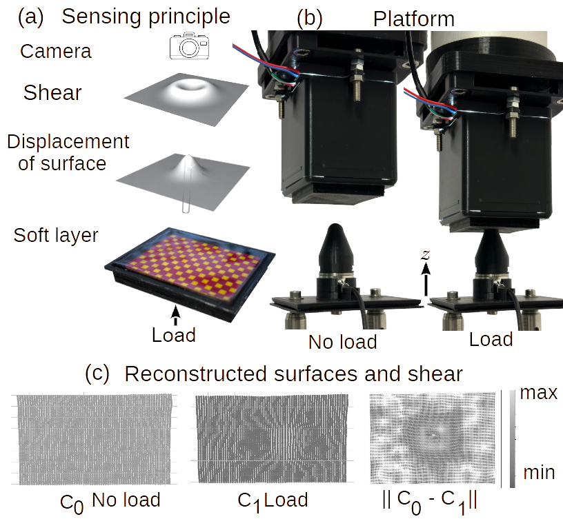
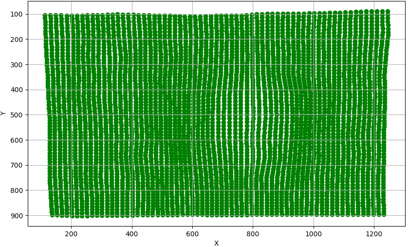
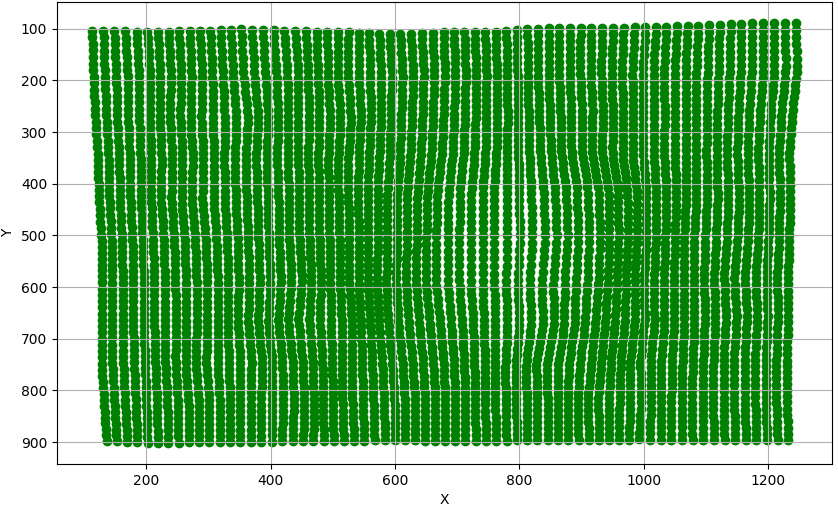

NUSense: Robust Soft Optical Tactile Sensor
Project Date: May, 2024
The paper introduces "NUSense," a robust optical tactile sensor designed to enhance robotic tactile sensing through the detection of shear strain. Traditional tactile sensors often focus on measuring pressure, but NUSense uses a silicone rubber pad dyed with color inks to capture shear deformation, providing a deeper understanding of tactile interactions. This sensor works by visually detecting surface elongations under mechanical load using a camera, which captures changes in the color pattern of the silicone pad.
The image processing algorithm in NUSense plays a crucial role in interpreting tactile information from visual data. When the silicone rubber pad experiences deformation due to external forces, it generates distinct color changes that are captured by an integrated camera. The sensor’s LEDs provide uniform lighting, ensuring consistent and clear images. The algorithm then processes these images to detect and quantify shear strain by analyzing changes in color patterns.
First, the captured image is preprocessed to remove noise and enhance contrast, making the color shifts more distinguishable. The algorithm identifies regions with color deformation and tracks these changes over time, which correlates with the applied force and movement. By mapping these color changes across the surface of the sensor, the system can accurately determine the magnitude and direction of shear strain. This method allows NUSense to translate complex tactile interactions into actionable data, which the robot can use to make precise adjustments during manipulation tasks. The robustness of this image processing algorithm ensures the sensor remains sensitive to subtle tactile changes, enabling high-resolution feedback.
The experimental results show that NUSense can measure normal forces accurately, localize single contacts, and detect the orientation of edges. The sensor's robustness is demonstrated through repeated load tests and edge detection experiments, showing minimal drift and consistent performance even under varying conditions. This novel approach makes NUSense suitable for complex robotic manipulation tasks where high tactile precision and durability are essential.
Technologies Used
- Novel Robust Optical Tactile Sensor
- Fisheye Camera
- Python for Algorithm Development
- ATI Force-Torque Sensor
- 3D Printed Parts for Sensor Holding
Project Gallery
 
